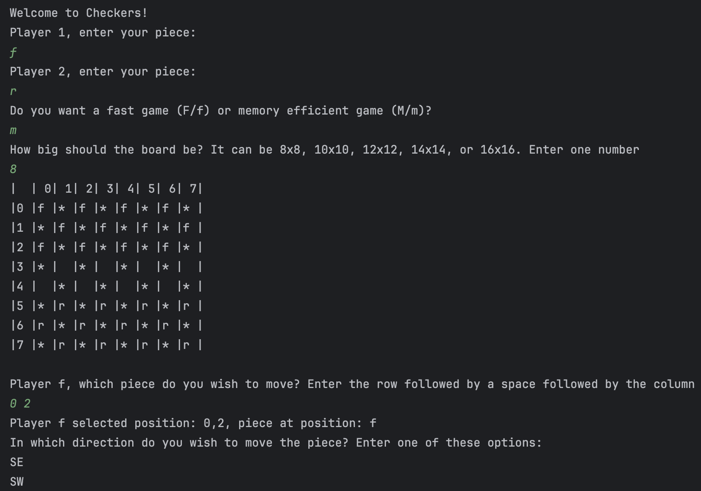
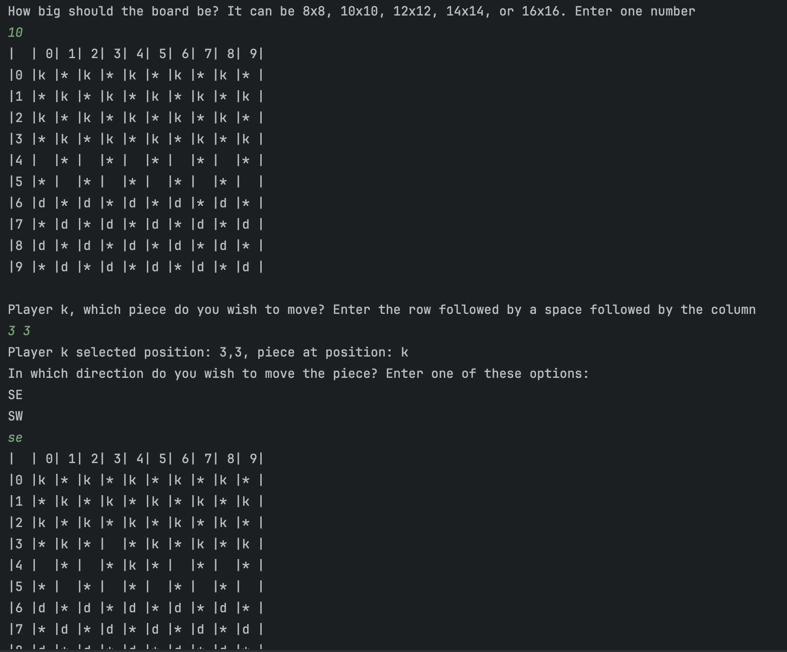
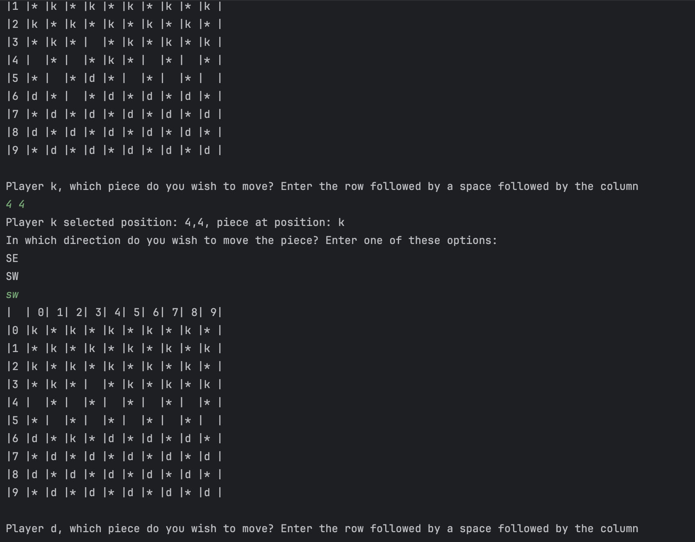
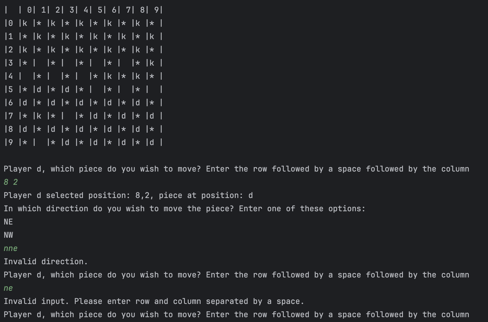

Featured Project
Checkerboard Game (Team Project)
Developed a command-line checkerboard game in Java as part of a 4-person team. My contributions included move validation and turn logic, demonstrating object-oriented programming and collaborative development.
Technologies: Java, Git, Terminal I/O




JUnit Testing Example
Wrote JUnit test cases to validate game logic and demonstrate test-driven development practices.
UML Diagrams
Created UML diagrams to document system architecture, class relationships, and object interactions.
Additional Projects
Maze Generator (Union–Find)
Implemented a randomized maze generator using the Union–Find data structure and visualized the process using SDL2 following the MVC architecture.
Technologies: C++, SDL2, Union–Find, MVC
Contact
💻 GitHub